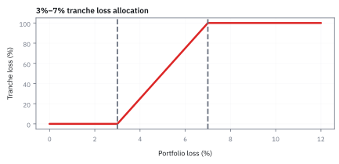
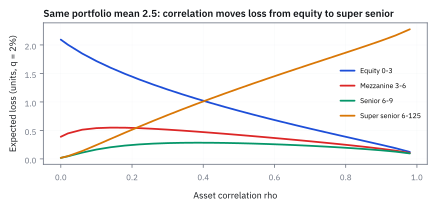
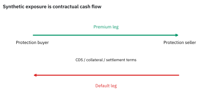

22.4 CDOs, Synthetic CDOs, and the Gaussian Copula
CDO แบ่งขาดทุนของพอร์ตสินเชื่อเป็นชั้นที่รับขาดทุนจากล่างขึ้นบน ขาดทุนเฉลี่ยของพอร์ตไม่ขึ้นกับ correlation แต่ขาดทุนของแต่ละชั้นขึ้นกับมันมาก และ Gaussian copula คือเครื่องมือที่ตลาดใช้ใส่ correlation ตัวนั้นเข้าไป
พอร์ตอ้างอิง 125 บริษัท บริษัทละ \$1 ล้าน แต่ละบริษัทมีโอกาสผิดนัดใน 1 ปี 2% และถ้าผิดนัดได้คืนศูนย์ ขาดทุนเฉลี่ยของพอร์ตจึงเป็น \$2.5 ล้าน ธนาคารขาย protection บนชั้นบนสุด (super senior) ซึ่งรับขาดทุนตั้งแต่บริษัทที่ 7 ที่ผิดนัดเป็นต้นไป แล้วคิดว่า “ขาดทุนเฉลี่ยของพอร์ตไม่ขึ้นกับ correlation ชั้นของเราก็เสี่ยงเท่าเดิม” ถ้าบริษัทผิดนัดอิสระกัน ชั้นนี้ขาดทุนเฉลี่ย \$18,286 ถ้า correlation ของมูลค่าบริษัทเป็น 0.5 จะเป็นเท่าไร?
ลองตอบก่อนเปิดเฉลย
\$1,235,442 หรือ 67.6 เท่า ทั้งที่ขาดทุนเฉลี่ยของพอร์ตยังเป็น \$2.5 ล้านเท่าเดิม correlation ไม่ได้เพิ่มขาดทุนรวม แต่ย้ายมันจากชั้นล่างไปชั้นบน ชั้น equity ขาดทุนเฉลี่ยลดจาก \$2.09 ล้านเป็น \$0.84 ล้าน หน้านี้คิดตารางนี้ครบทุกชั้นด้วยแบบจำลองที่ตลาดใช้จริง
ภาพรวมก่อนลงสูตร
CMO แบ่งเงินต้นตามลำดับเวลา collateralized debt obligation (CDO) แบ่งขาดทุนตามลำดับความเจ็บ มันรวมหุ้นกู้หรือเงินกู้หลายบริษัทไว้ด้วยกัน แล้วให้ชั้นล่างรับขาดทุนก่อน ชั้นบนจะเจ็บก็ต่อเมื่อขาดทุนทะลุชั้นล่างทั้งหมด ซึ่งเกิดเมื่อหลายบริษัทผิดนัดพร้อมกัน ราคาของชั้นบนจึงขึ้นกับคำถามเดียว: บริษัทผิดนัดพร้อมกันบ่อยแค่ไหน ผู้ลงทุนต่างกลุ่มจึงได้ของที่ต่างกันจากพอร์ตเดียว hedge fund ซื้อชั้นล่างที่ผลตอบแทนสูง บริษัทประกันซื้อชั้นบนที่ได้อันดับ AAA
การนับ “ผิดนัดพร้อมกัน” ของ 125 บริษัททุกคู่ทุกกลุ่มทำไม่ได้ ตลาดจึงย่อมันเหลือตัวเลขเดียวด้วยGaussian copula: มูลค่าของทุกบริษัทขยับตามปัจจัยร่วมตัวเดียว (เศรษฐกิจ) บวกส่วนเฉพาะตัว บริษัทผิดนัดเมื่อมูลค่าต่ำกว่าเกณฑ์ เมื่อรู้ปัจจัยร่วม ทุกบริษัทอิสระกัน การนับจึงเป็น binomial ธรรมดา แล้วค่อยเฉลี่ยทุกสภาพเศรษฐกิจ
หน้านี้จะเขียนขาดทุนของชั้นจากขาดทุนของพอร์ต ดูสองลูกหนี้ที่ขาดทุนเฉลี่ยเท่ากันแต่ชั้นบนเจ็บต่างกันสิบเท่า สร้างแบบจำลองปัจจัยเดียว ใช้มันกับพอร์ต 125 บริษัทของตัวอย่าง Donnelly และ Embrechts ตั้งราคาชั้นด้วยขาเบี้ยและขาชดเชยแบบCDS นับการผิดนัดเมื่อแต่ละบริษัทมีโอกาสไม่เท่ากัน แล้วดูว่า correlation ตัวเดียวพลาดอะไร
รูป — ขาดทุนเติมชั้นจากล่างขึ้นบน
ศัพท์ที่ใช้ในหัวข้อนี้
- CDO, CLO และ tranche
- ตราสารที่แบ่งขาดทุนของพอร์ตตราสารหนี้เป็นชั้น แต่ละชั้นกำหนดด้วยช่วงขาดทุนที่มันรับ ถ้าพอร์ตเป็นเงินกู้ เรียก collateralized loan obligation (CLO) ใช้สร้างของเสี่ยงมากและเสี่ยงน้อยจากพอร์ตเดียว
- Attachment และ detachment point
- ขาดทุนของพอร์ตที่ชั้นหนึ่งเริ่มเจ็บ (attachment) และหมดทั้งชั้น (detachment) เช่นชั้น 3%–7% ส่วนต่างของสองค่าคือความหนาของชั้น
- Equity, mezzanine, senior, super senior
- ชั้นล่างสุด ชั้นกลาง ชั้นบน และชั้นบนสุดที่ detachment เป็น 100% equity รับขาดทุนก้อนแรกจึงได้ผลตอบแทนสูงสุด senior เจ็บเฉพาะเมื่อขาดทุนทะลุชั้นล่างทั้งหมด
- Cash CDO และ synthetic CDO
- Cash CDO ถือหุ้นกู้หรือเงินกู้จริง synthetic CDO ไม่ถือ แต่อ้างอิงรายชื่อบริษัทสมมติผ่าน credit default swap (CDS) ผู้ขาย protection ของชั้นรับเบี้ยและจ่ายเมื่อขาดทุนเข้าชั้น
- Premium leg และ default leg
- ขาเบี้ยคือเงินที่ผู้ซื้อ protection จ่ายทุกงวดบนส่วนของชั้นที่ยังเหลือ ขาชดเชยคือเงินที่ผู้ขาย protection จ่ายเท่าขาดทุนที่เพิ่งเข้าชั้น ราคายุติธรรมคือเบี้ยที่ทำให้สองขามีค่าเท่ากัน
- Gaussian copula แบบปัจจัยเดียว
- แบบจำลองที่ให้มูลค่าของทุกบริษัทขยับตามปัจจัยร่วมตัวเดียวบวกส่วนเฉพาะตัว บริษัทผิดนัดเมื่อมูลค่าต่ำกว่าเกณฑ์ ใช้ต่อโอกาสผิดนัดรายบริษัทเข้าด้วยกันด้วย correlation ตัวเดียว
- Implied correlation และ tail dependence
- Implied correlation คือ $\rho$ ที่ทำให้แบบจำลองให้ราคาตรงกับตลาด tail dependence คือโอกาสที่ค่าสุดขั้วเกิดพร้อมกัน ซึ่ง correlation ตัวเดียวไม่ได้บอก
สัญลักษณ์และหน่วย
| สัญลักษณ์ | ความหมาย | หน่วย |
|---|---|---|
| $L$ | ขาดทุนของพอร์ต (เป็นสัดส่วน หรือจำนวนบริษัทที่ผิดนัดเมื่อได้คืนศูนย์) | สัดส่วน หรือบริษัท |
| $a,\ b$ | attachment และ detachment ของชั้น | หน่วยเดียวกับ $L$ |
| $\ell(L)$ | ขาดทุนของชั้น | หน่วยเดียวกับ $L$ |
| $q,\ c$ | โอกาสผิดนัดของแต่ละบริษัทถึงวันครบกำหนด และเกณฑ์ $c=\Phi^{-1}(q)$ | สัดส่วน, ไม่มีหน่วย |
| $M,\ \varepsilon_i,\ X_i$ | ปัจจัยร่วม ส่วนเฉพาะตัว และมูลค่าที่ปรับมาตรฐานของบริษัท $i$ (normal มาตรฐานทั้งหมด) | ไม่มีหน่วย |
| $\rho$ | correlation ของ $X_i$ ระหว่างสองบริษัท | ไม่มีหน่วย |
| $q(m)$ | โอกาสผิดนัดของแต่ละบริษัทเมื่อรู้ว่า $M=m$ | สัดส่วน |
| $s,\ d_t$ | เบี้ยต่อปีของชั้น และ discount factor ของงวด $t$ | สัดส่วนต่อปี, ไม่มีหน่วย |
ขั้นที่ 1 — ขาดทุนของพอร์ตกลายเป็นขาดทุนของชั้น
เริ่มจากกติกาที่ไม่มีความน่าจะเป็นเลย ถ้ารู้ขาดทุนของพอร์ต ขาดทุนของแต่ละชั้นคำนวณได้ทันที ชั้น $[a,b]$ ไม่เจ็บถ้าพอร์ตขาดทุนไม่ถึง $a$ เจ็บเท่าส่วนที่เกิน $a$ และเจ็บเต็มความหนา $b-a$ เมื่อขาดทุนถึง $b$
โจทย์ให้อะไรมาบ้าง: พอร์ต \$100 ล้าน ขาดทุน \$5 ล้าน (5%) แบ่งเป็นชั้น equity 0%–3% mezzanine 3%–7% และ senior 7%–100% แบบรูปด้านบน
คำตอบ: equity เสียเต็มชั้น \$3 ล้าน mezzanine เสีย \$2 ล้าน หรือ 50% ของความหนา \$4 ล้าน senior ไม่เสียเลย บรรทัดที่สองเป็นอีกรูปของสูตรเดียวกัน: ตัดขาดทุนที่เพดาน $b$ ก่อน แล้วลบ $a$ ชั้นเดียวกันจึงอาจไม่เจ็บหรือหมดทั้งชั้นก็ได้ แล้วแต่ว่าขาดทุนรวมไปถึงไหน
ตรวจเองใน 10 วินาที: $3+2+0=5$ เท่ากับขาดทุนของพอร์ต กติกาแบ่งขาดทุนเหมือน waterfall ของ CMO จึงไม่มีขาดทุนที่หายไปหรือเกิดเพิ่ม
รูป — เส้นหักมุมของชั้น 3%–7%

แกนนอนคือขาดทุนของพอร์ต 0% ถึง 12% แกนตั้งคือขาดทุนของชั้นเป็นเปอร์เซ็นต์ของความหนา $\ell(L)/(b-a)$ เส้นประแนวตั้งที่ 3% และ 7% คือ attachment และ detachment ขาดทุนพอร์ต 5% อยู่กลางทางชัน จึงได้ 50% รูปร่างนี้คือ call spread บนขาดทุนของพอร์ต: ซื้อ call ที่ strike 3% ขาย call ที่ strike 7%
ขั้นที่ 2 — ขาดทุนเฉลี่ยเท่ากัน แต่ชั้นบนเจ็บต่างกันสิบเท่า
กติกาของชั้นบอกว่าชั้นบนเจ็บเมื่อขาดทุนรวมสูง ขั้นนี้แสดงด้วยตัวอย่างเล็กที่สุดว่าขาดทุนรวมจะสูงบ่อยแค่ไหนขึ้นกับการผิดนัดพร้อมกัน ไม่ใช่โอกาสผิดนัดรายตัว
โจทย์ให้อะไรมาบ้าง: ลูกหนี้สองราย รายละ \$50 โอกาสผิดนัดรายละ 10% ได้คืนศูนย์ ชั้นบนรับขาดทุนส่วนที่เกิน \$50 เทียบสองโลก: ผิดนัดอิสระกัน และผิดนัดพร้อมกันเสมอ
คำตอบ: $p_{\rm ind}$ และ $p_{\rm tog}$ คือโอกาสที่พอร์ตขาดทุน \$0, \$50 และ \$100 ในสองโลก ขาดทุนเฉลี่ยของพอร์ตเป็น \$10 ทั้งสองโลก แต่ชั้นบนขาดทุนเฉลี่ย \$0.50 เมื่ออิสระกัน และ \$5.00 เมื่อพร้อมกัน ต่างกันสิบเท่า การตั้งราคาชั้นจึงต้องรู้โอกาสที่ผิดนัดพร้อมกัน ไม่ใช่แค่โอกาสรายตัว
ตรวจเองใน 10 วินาที: อิสระกัน โอกาสผิดนัดทั้งคู่คือ $0.1\times0.1=0.01$ (ผลของความเป็นอิสระ: โอกาสร่วมคือผลคูณ) รายเดียวคือ $2(0.1)(0.9)=0.18$ ไม่มีเลยคือ $0.9^2=0.81$ รวมได้ 1
รูป — สองโลกที่ขาดทุนเฉลี่ยเท่ากัน
ขั้นที่ 3 — Gaussian copula แบบปัจจัยเดียว
พอร์ตจริงมีหลายสิบบริษัท การเขียนโอกาสผิดนัดพร้อมกันทุกคู่ทุกกลุ่มทำไม่ได้ แบบจำลองนี้ย่อทุกอย่างเหลือตัวเลขเดียว: ให้มูลค่าของทุกบริษัทมีส่วนหนึ่งมาจากปัจจัยร่วม $M$ และอีกส่วนเป็นของตัวเอง แล้วให้บริษัทผิดนัดเมื่อมูลค่าต่ำกว่าเกณฑ์ที่เลือกให้โอกาสผิดนัดตรงกับตลาด
$M$ และ $\varepsilon_i$ ทุกตัวเป็น normal มาตรฐานที่อิสระกัน บรรทัดที่สองจึงบวก variance ได้ตรง ๆ และน้ำหนัก $\sqrt\rho$ กับ $\sqrt{1-\rho}$ ถูกเลือกมาเพื่อให้ $X_i$ ยังเป็น normal มาตรฐาน บรรทัดที่สามเหลือแค่ส่วนที่มาจาก $M$ ร่วมกัน เพราะส่วนเฉพาะตัวไม่เกี่ยวกัน นี่คือการสร้าง normal หลายตัวแปรจากตัวแปรอิสระแบบเดียวกับการจำลอง MVN ด้วย Cholesky แบบทั่วไปให้แต่ละบริษัทมีน้ำหนักของตัวเอง $a_i$ แทน $\sqrt\rho$ แล้ว correlation ของคู่ $i,j$ คือ $a_ia_j$
บรรทัดสุดท้ายเลือกเกณฑ์: บริษัทที่มีโอกาสผิดนัด 2% (ซึ่งตลาดหาได้จาก spread ของ CDS หรือราคาหุ้นกู้) ต้องผิดนัดเมื่อ $X_i$ ต่ำกว่าจุดที่พื้นที่ใต้ normal ทางซ้ายเป็น 0.02 คือ −2.0537 โอกาสผิดนัดรายตัวจึงไม่ขึ้นกับ $\rho$ เลย $\rho$ ทำหน้าที่อย่างเดียว คือกำหนดว่าบริษัทต่าง ๆ ผิดนัดพร้อมกันแค่ไหน
รูป — เศรษฐกิจแย่ลากทุกบริษัทเข้าหาเกณฑ์ผิดนัด
ขั้นที่ 4 — รู้ปัจจัยร่วมแล้ว ทุกบริษัทอิสระกัน
กลเม็ดที่ทำให้แบบจำลองนี้คำนวณเร็ว: ถ้าตรึง $M=m$ ไว้ ส่วนที่เหลือของแต่ละบริษัทคือ $\varepsilon_i$ ซึ่งอิสระกัน (conditional independence) การนับจำนวนผิดนัดจึงกลายเป็นbinomial ธรรมดา แล้วค่อยเฉลี่ยทุกค่าของ $m$ ด้วย density ของ normal
บรรทัดแรกย้าย $\sqrt\rho\,m$ ไปอีกข้างของเกณฑ์แล้วหารด้วย $\sqrt{1-\rho}$ นี่คือพื้นที่แดงอ่อนในรูปด้านบน ที่ $\rho=0.5$: $q(0)=0.18\%$, $q(-2)=18.29\%$ และ $q(-3)=53.81\%$ เศรษฐกิจปกติ บริษัทแทบไม่ผิดนัด เศรษฐกิจแย่มาก ครึ่งหนึ่งผิดนัดพร้อมกัน
บรรทัดสุดท้ายคือเหตุที่ขาดทุนเฉลี่ยของพอร์ตไม่ขึ้นกับ $\rho$: ค่าเฉลี่ยของ $q(m)$ ข้ามทุก $m$ ต้องกลับมาเป็นโอกาสผิดนัดรายตัว $q$ (tower property: ค่าเฉลี่ยของค่าเฉลี่ยแบบมีเงื่อนไขคือค่าเฉลี่ยเดิม) พอร์ต 125 บริษัทที่ 2% จึงเฉลี่ย 2.5 บริษัททุกค่า $\rho$ ตัวเลขในหน้านี้อินทิเกรตด้วยกฎสี่เหลี่ยมคางหมูบนช่วง $-10\le m\le10$
รูป — โอกาสผิดนัดของแต่ละบริษัทเมื่อรู้สภาพเศรษฐกิจ
ขั้นที่ 5 — correlation ย้ายโอกาสไปที่ศูนย์และที่หาง
โจทย์ให้อะไรมาบ้าง: พอร์ตของโจทย์ 125 บริษัท $q=2\%$ ได้คืนศูนย์ ขาดทุนนับเป็นจำนวนบริษัท เทียบ $\rho=0$ กับ $\rho=0.5$ ด้วยการนับแบบ binomial แล้วอินทิเกรตข้ามปัจจัยร่วม
คำตอบ: correlation 0.5 ทำให้ปีที่ไม่มีใครผิดนัดเลยเพิ่มจาก 8.00% เป็น 61.78% และปีที่ผิดนัด 9 บริษัทขึ้นไปเพิ่มจาก 0.098% เป็น 8.11% หรือราว 83 เท่า ค่าเฉลี่ยยังเป็น 2.5 เพราะโอกาสที่ย้ายไปศูนย์ถูกชดเชยด้วยโอกาสที่ย้ายไปหาง
ตรวจเองใน 10 วินาที: $\ln0.98=-0.0202$ คูณ 125 ได้ $-2.525$ และ $e^{-2.525}\approx0.080$
รูป — จำนวนผิดนัดใน 125 บริษัท ที่ correlation ต่ำและสูง
ขั้นที่ 6 — ขาดทุนเฉลี่ยของแต่ละชั้น และคำตอบของโจทย์
มีการกระจายของจำนวนผิดนัดแล้ว ขาดทุนเฉลี่ยของชั้นคือค่าเฉลี่ยของสูตรขาดทุนของชั้น $\ell(L)$ ถ่วงด้วยโอกาสของแต่ละ $L$ ชั้นในตัวอย่างนี้หนาชั้นละ 3 บริษัท และชั้น super senior รับตั้งแต่บริษัทที่ 7 ถึง 125
| $\rho$ | equity 0–3 | mezzanine 3–6 | senior 6–9 | super senior 6–125 |
|---|---|---|---|---|
| 0 | 2.0933 | 0.3885 | 0.0180 | 0.0183 |
| 0.1 | 1.7169 | 0.5401 | 0.1644 | 0.2430 |
| 0.3 | 1.2172 | 0.5136 | 0.2773 | 0.7692 |
| 0.5 | 0.8442 | 0.4204 | 0.2755 | 1.2354 |
| 0.99 | 0.1003 | 0.0896 | 0.0846 | 2.3102 |
บรรทัดที่สองเขียนชั้น equity ออกมาให้เห็น: ถ้าผิดนัด 3 รายขึ้นไป ชั้นเสียเต็ม 3 ถ้าผิดนัด 1 หรือ 2 ราย ชั้นเสียเท่านั้น ชั้นอื่นเขียนแบบเดียวกันโดยเลื่อนจำนวนผิดนัดขึ้น 3 หรือ 6 ราย บรรทัดสุดท้ายไล่ชั้นที่ไม่ทับกันและครอบคลุมทุกขาดทุน หน่วยคือบริษัท หรือล้านดอลลาร์ในโจทย์ equity กับ mezzanine กับ super senior รวมกันได้ 2.5 ทุกแถว (senior 6–9 เป็นส่วนหนึ่งของ super senior จึงไม่บวกซ้ำ)
รูปแบบในตารางเป็นจริงไม่ว่า $q$ เท่าไร: equity ลดลงเรื่อย ๆ เมื่อ $\rho$ สูง เพราะปีที่ไม่มีใครผิดนัดมากขึ้น super senior เพิ่มขึ้นเรื่อย ๆ เพราะหางหนาขึ้น คำตอบของโจทย์คือ 0.0183 เป็น 1.2354 หรือ \$18,286 เป็น \$1,235,442 ทุกแถว equity ≥ mezzanine ≥ senior เพราะชั้นหนาเท่ากันและชั้นล่างโดนก่อนเสมอ
mezzanine ค่อนข้างไม่ไวต่อ $\rho$ มันขึ้นแล้วลง สูงสุดราว 0.549 ที่ $\rho\approx0.15$ ถ้าตลาดให้ราคาที่ตรงกับขาดทุนเฉลี่ย 0.45 จะมีสอง $\rho$ ที่ให้ค่านี้ คือ 0.021 และ 0.442 และถ้าตลาดให้ราคาที่เกิน 0.549 จะไม่มี $\rho$ ไหนให้ได้เลย correlation ที่หาย้อนจากราคาชั้นกลางจึงอาจมีสองคำตอบหรือไม่มีคำตอบ
รูป — correlation ย้ายขาดทุนจาก equity ไป super senior

แกนนอนคือ $\rho$ จาก 0 ถึง 0.98 แกนตั้งคือขาดทุนเฉลี่ยเป็นจำนวนบริษัท ($q=2\%$) เส้นน้ำเงินคือ equity 0–3 แดงคือ mezzanine 3–6 เขียวคือ senior 6–9 ส้มคือ super senior 6–125 ตัวเลขตรงกับตารางด้านบน เส้นส้มตัดเส้นน้ำเงินระหว่าง $\rho=0.3$ ถึง 0.5 หลังจากนั้นขาดทุนส่วนใหญ่อยู่ที่ชั้นบน ผลรวมของเส้นน้ำเงิน แดง และส้มแบนที่ 2.5 ตลอด
ขั้นที่ 7 — synthetic CDO: ราคายุติธรรมของชั้นจากสองขา
ใน synthetic CDO ผู้ซื้อ protection จ่ายเบี้ย $s$ ต่อปีบนส่วนของชั้นที่ยังไม่ถูกขาดทุนกิน ผู้ขาย protection จ่ายเท่าขาดทุนที่เข้าชั้นในแต่ละงวด ต่างจากCDS รายบริษัทตรงที่สัญญาไม่จบเมื่อบริษัทแรกผิดนัด แต่เบี้ยเล็กลงตามส่วนที่เหลือ ราคายุติธรรมคือ $s$ ที่ทำให้สองขามีค่าเท่ากันวันนี้ เหมือน swap ที่มูลค่าตอนเริ่มเป็นศูนย์
โจทย์ให้อะไรมาบ้าง: พอร์ตเดิม สัญญา 2 ปี จ่ายเบี้ยปีละครั้งบนส่วนที่เหลือตอนต้นปี โอกาสผิดนัดถึงปีที่ 1 คือ 2% และถึงปีที่ 2 คือ $1-0.98^2=3.96\%$ คิดลดด้วย 3% ต่อปี ดูชั้น mezzanine 3–6 ที่ $\rho=0.3$ ซึ่งการนับแบบปัจจัยเดียวให้ขาดทุนสะสมเฉลี่ย $E[\ell_1]=0.5136$ และ $E[\ell_2]=0.9946$
คำตอบ: เบี้ยยุติธรรมของชั้นนี้คือ 18.11% ต่อปี ตัวอย่างนี้เสี่ยงมากเพราะได้คืนศูนย์และโอกาสผิดนัด 2% ต่อปี ที่ $\rho=0$ เบี้ยของชั้นเดียวกันคือ 29.37% ส่วน super senior ขึ้นจาก 0.19% เป็น 0.92% ต่อปีเมื่อ $\rho$ ขึ้นจาก 0 เป็น 0.3 ชั้น equity ต้องจ่ายถึง 72.39% ต่อปีที่ $\rho=0$ ตลาดจึงให้ equity จ่ายเบี้ยคงที่ 5% ต่อปีบวกเงินก้อนล่วงหน้า (upfront) ที่ $\rho=0.3$ ขาชดเชยของ equity คือ 1.7061 และขาเบี้ยต่อเบี้ย 1 หน่วยคือ 4.5931 upfront จึงเป็น $(1.7061-0.05\times4.5931)/3=49.21\%$ ของความหนา
ตรวจเองใน 10 วินาที: ถ้าไม่มีขาดทุนปีแรก ขาเบี้ยจะเป็น $3(0.9709+0.9426)=5.74\,s$ ขาดทุน 0.5136 ของปีแรกทำให้ฐานของเบี้ยปีที่สองหดลง ขาเบี้ยจึงเหลือ $5.2563\,s$
รูป — เงินที่คาดว่าจะไหลในสัญญา 2 ปีของชั้นกลาง
ขั้นที่ 8 — เมื่อแต่ละบริษัทมีโอกาสไม่เท่ากัน
binomial ใช้ได้เพราะทุกบริษัทมีโอกาสเท่ากัน ถ้าไม่เท่ากัน สูตร binomial ใช้ไม่ได้อีก แบบฝึกหัดของคอร์สให้ลูกหนี้ 20 รายที่โอกาสผิดนัดตั้งแต่ 1.5% ถึง 65% (สมมติอิสระกัน) จำนวนผิดนัดจึงเป็น Poisson-binomial วิธีนับคือเพิ่มลูกหนี้ทีละรายแล้วปรับตาราง
จะมี $k$ รายผิดนัดใน $i$ รายแรกได้สองทาง: $i-1$ รายแรกผิดนัด $k$ รายแล้วรายใหม่รอด หรือผิดนัด $k-1$ รายแล้วรายใหม่ผิดนัด สองรายแรกที่ 20% ให้ $(0.8^2,\ 2(0.2)(0.8),\ 0.2^2)$ ทำครบ 20 รายได้ $P(N=0..5)=1.10\%,\ 6.46\%,\ 16.29\%,\ 23.99\%,\ 23.40\%,\ 16.17\%$
ถ้าใช้ binomial ที่ค่าเฉลี่ยเท่ากัน ($p=3.669/20$) variance จะเป็น 2.9959 และ $P(N\ge5)=29.93\%$ ความต่างของโอกาสรายตัวทำให้การกระจายแคบลง ถ้ามีปัจจัยร่วม ให้ทำ recursion นี้ที่แต่ละ $m$ ด้วย $p_i(m)=\Phi\big((\Phi^{-1}(p_i)-a_im)/\sqrt{1-a_i^2}\big)$ แล้วอินทิเกรตข้าม $m$ แบบเดิม
ขั้นที่ 9 — correlation เท่ากัน แต่หางไม่เท่ากัน
ความเข้าใจผิดที่พบบ่อยคือคิดว่ารู้การกระจายของแต่ละตัวกับ correlation แล้วจะรู้การกระจายร่วม correlation วัดแค่ความสัมพันธ์เชิงเส้น ขั้นนี้วัดโอกาสที่สองตัวแปรเกิน 2.5 พร้อมกัน ภายใต้ normal สองตัวแปรกับ meta-Gumbel ที่ทั้งคู่มี marginal เป็น normal มาตรฐานและความสัมพันธ์ใกล้เคียงกัน
meta-Gumbel ในรูปจับคู่กับ normal ที่ $\rho=0.7$ ด้วย Kendall's tau แล้วแปลง marginal กลับเป็น normal จาก 5,000 จุดคาดว่าจะมีจุดที่ทั้งสองตัวเกิน 2.5 ราว 18.1 จุด เทียบกับ 7.4 จุดของ normal ($P_{\rm normal}$ ได้จากการอินทิเกรต density ของตัวแรกคูณโอกาสแบบมีเงื่อนไขของตัวที่สอง)
$\lambda_U$ คือโอกาสที่ตัวหนึ่งสุดขั้วเมื่ออีกตัวสุดขั้วแล้ว เมื่อเกณฑ์สูงขึ้นไม่สิ้นสุด Gumbel ให้ 0.58 แต่ normal ที่ $\rho\lt1$ ให้ศูนย์ นี่คือสิ่งที่ Gaussian copula ตัดทิ้ง: เหตุการณ์ที่ทุกอย่างแย่พร้อมกันจริง ๆ ซึ่งเป็นเหตุการณ์เดียวที่ชั้นบนสุดสนใจ
รูป — normal สองตัวแปรกับ meta-Gumbel

จุดสุ่ม 5,000 จุดต่อภาพ ภาพซ้ายคือ normal สองตัวแปรที่ $\rho=0.7$ ภาพขวาคือ meta-Gumbel ที่ $\theta=1.9749$ marginal เป็น normal มาตรฐานทั้งคู่ เส้นแดงคือเกณฑ์ 2.5 ของแต่ละแกน หัวภาพบอก correlation ของตัวอย่าง 0.70 และ 0.71 และจำนวนจุดที่เกิน 2.5 ทั้งสองแกน 5 และ 21 จุด ค่าคาดหมายคือ 7.4 และ 18.1 ตัวเลขในภาพต่างจากนี้เพราะเป็นการสุ่มครั้งเดียว ดูมุมขวาบน: ภาพขวามีจุดที่สุดขั้วพร้อมกันหนาแน่นกว่าชัดเจน ทั้งที่ correlation เท่ากัน
ความผิดที่ให้คำตอบผิดแบบเงียบ ๆ
ตั้งราคาชั้นจากขาดทุนเฉลี่ยของพอร์ต: ขาดทุนเฉลี่ย 2.5 บริษัทเท่ากันทุก $\rho$ แต่ super senior เปลี่ยนจาก 0.0183 เป็น 1.2354 ระหว่าง $\rho=0$ กับ 0.5
สลับหน่วยเปอร์เซ็นต์กับสัดส่วน: ใส่ขาดทุน 5 (หมายถึง 5%) ในสูตรที่ $a=0.03,\ b=0.07$ จะได้ชั้นเสียเต็ม 100% แทน 50%
คิดเบี้ยบนความหนาเต็มตลอดสัญญา: ในสัญญา 2 ปีของชั้นกลาง ขาเบี้ยจะเป็น $5.74\,s$ แทน $5.2563\,s$ เบี้ยยุติธรรมออกมา 16.59% แทน 18.11% ผู้ขาย protection ขายถูกเกินไป
ใช้ $\rho$ ตัวเดียวทุกชั้น: ราคาตลาดของแต่ละชั้นให้ implied correlation ไม่เท่ากัน (correlation skew) การใช้ตัวเลขของชั้นหนึ่งไปตั้งราคาอีกชั้นให้ราคาผิดโดยไม่มีสัญญาณเตือน
ใช้ binomial เมื่อโอกาสรายตัวไม่เท่ากัน: ลูกหนี้ 20 รายของแบบฝึกหัดให้ $P(N\ge5)=28.76\%$ แต่ binomial ที่ค่าเฉลี่ยเท่ากันให้ 29.93% และ variance เกินจริง 18%
ใช้ทำอะไรบนโต๊ะจริง
CDO ยุคแรกกลางทศวรรษ 1990 เป็น cash CDO ที่ธนาคารสร้างจากหุ้นกู้ในงบดุลตัวเอง เกณฑ์ทุนให้กันทุนสูงสำหรับหุ้นกู้เหล่านี้ ธนาคารจึงแบ่งชั้น ขายชั้นบนออกไป และเก็บ equity ไว้ ผลตอบแทนและความเสี่ยงส่วนใหญ่ยังอยู่กับธนาคาร แต่ทุนที่ต้องกันลดลงมาก จึงเป็นการหลบเกณฑ์ทุน (regulatory arbitrage) มากกว่าการลดความเสี่ยง cash CDO ต้องมีผู้จัดการและเอกสารยาว (waterfall, credit enhancement) และแต่ละชั้นได้รับการจัดอันดับ
synthetic CDO เกิดจากความต้องการที่ต่างกัน: hedge fund อยากได้ชั้นเสี่ยง บริษัทประกันอยากได้ชั้น AAA และตลาด CDS โตจนอ้างอิงพอร์ตสมมติได้ มันต่างจาก cash CDO สองข้อ ธนาคารขาย protection บนชั้นเดียวได้โดยไม่ต้องขายชั้นอื่น และเมื่อไม่ได้ถือหุ้นกู้จริง ก็ต้อง hedge ด้วย CDS รายบริษัทหรือดัชนีไปเรื่อย ๆ โดย hedge ratio มาจากแบบจำลองเดียวกันนี้ ตลาดเห็นเบี้ย $s$ แล้วหาย้อนเป็น implied correlation แต่ละชั้นได้ $\rho$ ไม่เท่ากัน และบางชั้นหาไม่ได้เลย ความนิยมของแบบจำลองมาจากความเร็วในการคำนวณ ไม่ใช่ความถูกต้อง
desk ที่ถือชั้นของ CDO ต้องรายงานความไวต่อ spread ของแต่ละบริษัท ต่อ $\rho$ และต่อ recovery ไม่ใช่แค่ต่อ spread ของดัชนี พฤษภาคม 2005 Ford และ General Motors ถูกลดอันดับเป็น junk ชั้น equity กับ mezzanine เคลื่อนสวนกับที่ hedge ตามแบบจำลองคาด โต๊ะที่ถือ equity แล้ว hedge ด้วย mezzanine ขาดทุนทั้งสองขา และในปี 2012 ตำแหน่งขนาดใหญ่ของ JPMorgan ในดัชนี CDX IG9 (กรณี London Whale) ถูกสังเกตเห็นเพราะราคาดัชนีเพี้ยนจากราคาที่เกี่ยวข้อง ทั้งสองกรณีบอกว่าราคา mark และ hedge ของพอร์ตแบบนี้พึ่งแบบจำลองมากกว่าที่เห็น และ bid-offer ที่กว้างทำให้ปิดสถานะได้แพง
โจทย์ตรวจความเข้าใจ
1. พอร์ต \$100 ล้านขาดทุน 8% ชั้น 0%–3%, 3%–7% และ 7%–100% ขาดทุนเท่าไรเป็นดอลลาร์?
เฉลย
equity $\min(8,3)=\$3$ ล้าน mezzanine $\min(5,4)=\$4$ ล้าน (หมดชั้น) senior $\min(1,93)=\$1$ ล้าน รวม \$8 ล้าน ชั้น senior เริ่มเจ็บเมื่อขาดทุนเกิน 7%
2. ลูกหนี้สองรายของตัวอย่างสองโลก ถ้าโอกาสผิดนัดพร้อมกันเป็น 5.5% (ระหว่างสองโลก) ขาดทุนเฉลี่ยของพอร์ตและของชั้นบนเป็นเท่าไร?
เฉลย
ผิดนัดรายเดียว $2(0.10-0.055)=0.09$ ไม่ผิดนัดเลย $1-0.055-0.09=0.855$ ขาดทุนเฉลี่ยของพอร์ต $0.09(50)+0.055(100)=10$ เท่าเดิม ชั้นบน $0.055(50)=2.75$ อยู่ระหว่าง 0.50 กับ 5.00 ตามโอกาสผิดนัดพร้อมกัน
3. ใช้ recursion ของ Poisson-binomial กับสามรายแรกของแบบฝึกหัด (20%, 20%, 6%) หา $P(N=0..3)$
เฉลย
เริ่มจาก $\pi_2=(0.64,0.32,0.04)$ เพิ่มรายที่สาม 6%: $\pi_3(0)=0.64(0.94)=0.6016$, $\pi_3(1)=0.32(0.94)+0.64(0.06)=0.3392$, $\pi_3(2)=0.04(0.94)+0.32(0.06)=0.0568$, $\pi_3(3)=0.04(0.06)=0.0024$ รวมได้ 1 และค่าเฉลี่ย $0.3392+2(0.0568)+3(0.0024)=0.46$ เท่ากับ $0.2+0.2+0.06$
คำนวณซ้ำด้วย JavaScript
โค้ดนี้มี CDF ของ normal และตัวผกผัน สร้างการกระจายของจำนวนผิดนัดใน Gaussian copula แบบปัจจัยเดียวด้วยกฎสี่เหลี่ยมคางหมู คิดขาดทุนเฉลี่ยของชั้น เบี้ยยุติธรรมของสัญญา 2 ปี และ Poisson-binomial ของแบบฝึกหัด แล้วพิมพ์ตัวเลขหลักออกมาหนึ่งบรรทัด
เปิดดูโค้ด
const {sqrt, exp, log, log1p, abs, PI, min, max} = Math;
function num(name, x) {
if (typeof x !== 'number' || !Number.isFinite(x)) throw new TypeError(`${name} must be a finite number`);
return x;
}
const pdf = x => exp(-x * x / 2) / sqrt(2 * PI);
// Standard normal CDF: power series near 0, continued fraction in the tails.
function Phi(x) {
if (abs(num('x', x)) < 3) {
let term = x, sum = x;
for (let n = 1; n < 200 && abs(term) > 1e-17 * abs(sum); n++) { term *= x * x / (2 * n + 1); sum += term; }
return 0.5 + pdf(x) * sum;
}
const z = abs(x); let f = z;
for (let k = 300; k >= 1; k--) f = z + k / f;
return x > 0 ? 1 - pdf(z) / f : pdf(z) / f;
}
function PhiInv(p) {
if (!(num('p', p) > 0 && p < 1)) throw new RangeError('p must be strictly between 0 and 1');
let x = 0;
for (let i = 0; i < 100; i++) { const dx = (Phi(x) - p) / pdf(x); x -= dx; if (abs(dx) < 1e-15) break; }
return x;
}
// Tranche loss for portfolio loss L and tranche [a, b].
function trancheLoss(L, a, b) {
if (!(num('a', a) >= 0 && num('b', b) > a)) throw new RangeError('need 0 <= a < b');
return min(max(num('L', L) - a, 0), b - a);
}
// P(L = l), l = 0..N, in the one-factor Gaussian copula; trapezoid rule over the factor m.
function lossDistribution(N, q, rho, h = 0.01, lim = 10) {
if (!Number.isInteger(N) || N < 1) throw new RangeError('N must be a positive whole number');
if (!(num('rho', rho) >= 0 && rho < 1)) throw new RangeError('rho must be in [0, 1)');
const c = PhiInv(q), logC = [0];
for (let l = 1; l <= N; l++) logC.push(logC[l - 1] + log(N - l + 1) - log(l));
const binom = p => logC.map((lc, l) => p <= 0 ? +(l === 0) : p >= 1 ? +(l === N) : exp(lc + l * log(p) + (N - l) * log1p(-p)));
if (rho === 0) return binom(q);
const out = new Array(N + 1).fill(0);
for (let m = -lim; m <= lim + 1e-9; m += h) {
const w = h * pdf(m), row = binom(Phi((c - sqrt(rho) * m) / sqrt(1 - rho)));
for (let l = 0; l <= N; l++) out[l] += w * row[l];
}
return out;
}
const expectedTranche = (P, a, b) => P.reduce((s, p, l) => s + p * trancheLoss(l, a, b), 0);
// Two-period tranche: premium on the notional left at the start of each year, default leg on new losses.
function fairSpread(E1, E2, a, b, r) {
const th = b - a, d1 = 1 / (1 + r), d2 = d1 * d1;
const annuity = d1 * th + d2 * (th - E1), protection = d1 * E1 + d2 * (E2 - E1);
return {annuity, protection, spread: protection / annuity, upfront5: (protection - 0.05 * annuity) / th};
}
// Number of defaults when each name has its own default probability (names independent).
function poissonBinomial(ps) {
let d = [1];
for (const p of ps) {
if (!(num('p', p) >= 0 && p <= 1)) throw new RangeError('probabilities must be in [0, 1]');
const nd = new Array(d.length + 1).fill(0);
d.forEach((x, k) => { nd[k] += x * (1 - p); nd[k + 1] += x * p; });
d = nd;
}
return d;
}
const N = 125, q = 0.02, rhos = [0, 0.1, 0.3, 0.5, 0.99];
const dists = rhos.map(rho => lossDistribution(N, q, rho));
const tranches = [[0, 3], [3, 6], [6, 9], [6, 125]];
const table = dists.map(P => tranches.map(([a, b]) => expectedTranche(P, a, b)));
const q2 = 1 - 0.98 ** 2, P1 = lossDistribution(N, q, 0.3), P2 = lossDistribution(N, q2, 0.3);
const Q1 = dists[0], Q2 = lossDistribution(N, q2, 0);
const spread = (A, B, a, b) => fairSpread(expectedTranche(A, a, b), expectedTranche(B, a, b), a, b, 0.03);
const pset = [0.20, 0.20, 0.06, 0.30, 0.40, 0.65, 0.30, 0.23, 0.02, 0.12, 0.134, 0.21, 0.08, 0.10, 0.10, 0.02, 0.30, 0.015, 0.20, 0.03];
const pb = poissonBinomial(pset);
const tail = (P, k) => P.slice(k).reduce((s, p) => s + p, 0);
console.log(JSON.stringify({
example: [trancheLoss(5, 0, 3), trancheLoss(5, 3, 7), trancheLoss(5, 7, 100)],
c: PhiInv(q), qm: [0, -2, -3].map(m => Phi((PhiInv(q) - sqrt(0.5) * m) / sqrt(0.5))),
zero: [dists[0][0], dists[3][0]], sevenUp: [tail(dists[0], 7), tail(dists[3], 7)], nineUp: [tail(dists[0], 9), tail(dists[3], 9)],
table, portfolio: dists.map(P => expectedTranche(P, 0, 125)),
mezz: {E1: expectedTranche(P1, 3, 6), E2: expectedTranche(P2, 3, 6), ...spread(P1, P2, 3, 6)},
spreads: {mezz0: spread(Q1, Q2, 3, 6).spread, equity0: spread(Q1, Q2, 0, 3).spread, equity3: spread(P1, P2, 0, 3),
superSenior0: spread(Q1, Q2, 6, 125).spread, superSenior3: spread(P1, P2, 6, 125).spread},
pset: {mean: pb.reduce((s, p, k) => s + k * p, 0), first: pb.slice(0, 6), fiveUp: tail(pb, 5)}
}));สิ่งที่ควรตอบได้หลังอ่าน
- ขาดทุนของชั้นคือ $\min(\max(L-a,0),b-a)$: พอร์ตเสีย 5% ชั้น 3%–7% เสียครึ่งชั้น
- ขาดทุนเฉลี่ยของพอร์ตไม่ขึ้นกับ correlation แต่ของแต่ละชั้นขึ้นมาก: สองลูกหนี้ ชั้นบนเสียต่างกันสิบเท่า
- Gaussian copula ให้ทุกบริษัทอิสระกันเมื่อรู้ปัจจัยร่วม จึงนับด้วย binomial แล้วอินทิเกรตข้ามปัจจัย และเศรษฐกิจแย่ ($m=-2$ ที่ $\rho=0.5$) ดันโอกาสผิดนัดจาก 2% เป็น 18.3% พร้อมกันทุกบริษัท
- ในพอร์ต 125 บริษัทที่ 2% $\rho$ จาก 0 เป็น 0.5 ย้ายขาดทุนเฉลี่ยของ super senior จาก 0.0183 เป็น 1.2354 และของ equity จาก 2.0933 เป็น 0.8442
- เบี้ยยุติธรรมของชั้นหาจากสองขาที่เบี้ยคิดบนส่วนที่เหลือ (18.11% ต่อปีสำหรับชั้นกลาง 2 ปี) และ correlation ตัวเดียวไม่บอก tail dependence
หน้าถัดไป สิ่งที่ปี 2007–2008 ทำพังจริง เอาทุกชิ้นของบทมาต่อกัน: สินเชื่อบ้านที่หลักประกันลดค่า ชั้นของ CDO ที่ทำจากชั้นกลางของ CDO อื่น และเงินกู้ที่ทำให้ขาดทุนบนกระดาษกลายเป็นการขายบังคับ